Все механические фильтры Аруан — грубой (раздел 01) и ультратонкой (раздел 02) очистки — построены на одной конструкции и одном принципе: поверхностная фильтрация с полной регенерацией промывкой. Отличается только фильтрующий элемент.
Конструкция
Устройство фильтра Аруан
1Манометр входа — контроль давления на входе, определение рабочего режима
2Манометр выхода — контроль перепада давления ΔP: рост перепада — сигнал к промывке
3Вход загрязнённой воды — вода поступает в пространство вокруг фильтрующего элемента
4Выход чистой воды — отфильтрованная вода после фильтроэлемента
5Фильтрующий элемент — AISI 304L/316L: литая сетка (50–5000 мкм) или струнная намотка (0,5–20 мкм), ресурс 10–15 лет
6Корпус AISI 304 — рабочее давление до 10 бар, температура до +95 °C
Гидроиспытание каждого изделия • Российское производство • Сертифицировано ISO 9001
Фильтрующие элементы
Два фильтроэлемента — две ступени очистки
Раздел 01Литая сетка — 50–5000 мкм
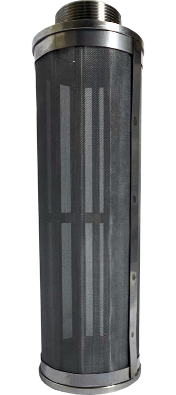
Литой сетчатый элемент без глубинных пор
Сетка отталкивает механические загрязнения
Промывка смывает грязь в дренаж — без замены более 15 лет
Раздел 02Струнная намотка — 0,5–20 мкм
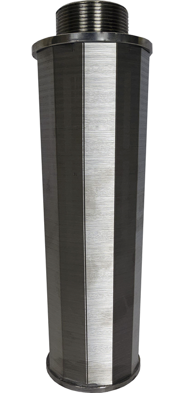
Микронная очистка от 0,5 мкм
Струна вибрирует потоком воды и сбрасывает загрязнения
Полная регенерация промывкой — без замены картриджа
AISI 304L/316LБез глубинного засоренияПолная регенерация промывкойБез расходных элементовРесурс 10–15 лет
Экономическое обоснование
Стоимость владения за 10 лет — Аруан против картриджных систем
Картриджный фильтр
Замена картриджей 6–12 раз в год, 1 500–3 000 ₽ за картридж
Простой системы при каждой замене
Склад расходников, закупки, утилизация, риск срыва поставок
Фильтр Аруан
Расходные материалы отсутствуют — 0 ₽/год
Регенерация без остановки системы (с байпасом)
Профилактика 2 минуты в неделю, окупаемость 1–2 года
Экономия — до 298 000 ₽ на один фильтр за 10 лет: 180 000–360 000 ₽ расходов на картриджи против разовой стоимости фильтра Аруан и нулевых затрат на обслуживание.
Каталог — Механическая очистка воды
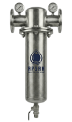
Раздел 01 · Первая ступень очистки
Фильтры грубой очистки (ГФ)
Промышленные сетчатые самопромывные фильтры серии Аруан ГФ — первая ступень механической очистки воды.
Струнный фильтроэлемент AISI 304L/316L — без глубинного засорения
Струна вибрирует и сбрасывает загрязнения — без реагентов, без демонтажа, без замены
Ресурс фильтроэлемента 10–15 лет, холодная и горячая вода до +90 °C
Корпус AISI 304, манометры входа и выхода, дренажный клапан; ISO 9001
Удаляет:Трёхвалентное железо (Fe³⁺)Ржавчина и окалинаМеханические частицыПесок и илВзвешенные веществаМутностьЦветность
Фильтроэлемент
Струнная намотка AISI 304L/316L
Тонкость 0,5–1 мкм
Без глубинных пор
Регенерация промывкой
Струна вибрирует и сбрасывает грязь
Без реагентов и демонтажа
Без замены картриджа
Эксплуатация
Холодная и горячая вода до +90 °C
Расходники отсутствуют — 0 ₽/год
Профилактика 2 минуты в неделю
Применение
Перед RO-мембранами и УФ
ГВС и питьевое водоснабжение
Пищевые производства
Область применения
Типовые объекты внедрения
ВодоподготовкаПредфильтрация перед мембранными и УФ-установками
Пищевая промышленностьСоответствие санитарным нормам производства
Многоквартирные домаЦентрализованная очистка на вводе, одобрено для ГВС
Производственные линииПредварительная очистка перед технологическими процессами
Каталог — Механическая очистка воды
02
Раздел 02 · Спецификация
Ультратонкая очистка — модельный ряд
0,5–1 мкмтонкость фильтрации
до +90 °Cрабочая температура
10–15 летресурс фильтроэлемента
0 ₽/годрасходники и сервис
Серия АурусБытовые и малопроизводительные — 1–6 м³/ч
Фото
Модель
Производительность
Тонкость
Присоединение
Вес, кг
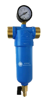
Аурус 1
1 м³/ч
1 мкм
ДУ 20–15
1,26
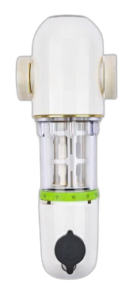
Аурус Космо
2 м³/ч
1 мкм
1" (ДУ 25)
—
Аурус 4
4 м³/ч
1 мкм
ДУ 32
2,5
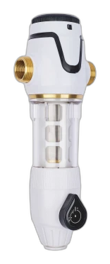
Аурус Ультра
4 м³/ч
1 мкм
1" (ДУ 25)
—
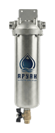
Аурус ФТО 2.0.5
4 м³/ч
0,5 мкм
ДУ 20–25
3
Аурус 6
6 м³/ч
1 мкм
ДУ 20–25
3
Каталог — Механическая очистка воды
02
Раздел 02 · Продолжение
Фильтры ультратонкой очистки
Серия АруанПромышленные — 10–600 м³/ч
Фото
Модель
Производительность
Тонкость
Присоединение
Вес, кг
Аруан 10
10–15 м³/ч
1 мкм
ДУ 40
3
Аруан 20
20–30 м³/ч
1 мкм
ДУ 50
15
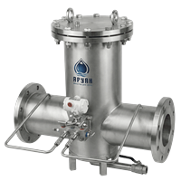
Аруан 30
30–40 м³/ч
50 мкм
ДУ 65
25
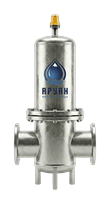
Аруан 40
40–50 м³/ч
1 мкм
ДУ 80
32
Аруан 50
50–60 м³/ч
1 мкм
ДУ 100
48
Аруан 60
60–80 м³/ч
1 мкм
ДУ 100
85
Каталог — Механическая очистка воды
02
Раздел 02 · Спецификация · Продолжение
Серия Аруан — модельный ряд
Фото
Модель
Производительность
Тонкость
Присоединение
Вес, кг
Аруан 100
80–100 м³/ч
1 мкм
ДУ 100
90
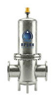
Аруан 150
150–200 м³/ч
50 мкм
ДУ 150
100
Аруан 200
200–400 м³/ч
50 мкм
ДУ 200
150
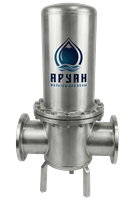
Аруан 400
400–600 м³/ч
50 мкм
ДУ 250
200
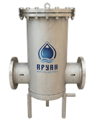
Аруан 500
500–600 м³/ч
50 мкм
ДУ 300
250
Каталог — Механическая очистка воды
Раздел 03 · Автоматизация промыва
Автоматика промыва фильтров
Автоматическая регенерация фильтроэлемента по расписанию — без оператора.
Автоматическое открытие дренажного клапана точно по расписанию
16 режимов периодичности, интервалы от 1 секунды до 3 месяцев
Встроенный аккумулятор — до 10 дней работы без электричества
Совместима со всеми фильтрами серии ГФ и Аруан, холодная и горячая вода
Принцип работы
Таймерное управление клапаном дренажа
Промывка автоматически в заданное время
Настройка
Интервал и длительность — на корпусе
Питание 220 В, 50 Гц
Совместимость
Подбор по диаметру дренажного патрубка
3/4"–1", 2", ДУ 50
Фото
Наименование
Дренаж
Рекомендуется для
Автоматика промыва по таймеруБазовая версия
1/2"
Аруан ГФ 2–6
Автоматика промыва по таймеру3/4"–1"
3/4" – 1"
Аруан ГФ 10–30
Автоматика промыва по таймеру2"
2"
Аруан ГФ 40–80
Автоматика промыва по таймеруДУ 50
ДУ 50
Аруан ГФ 80–140
Промышленное исполнение
Автоматика промыва по разнице давления (ΔP)
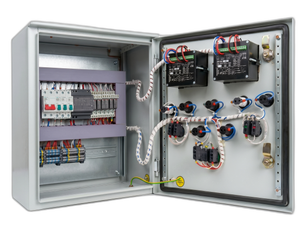
Шкаф управления АСУ
Для промышленных объектов — промывка не по расписанию, а по реальному загрязнению фильтра:
Датчики давления на входе и выходе фильтра считывают перепад ΔP
При падении давления на выходе шкаф АСУ автоматически открывает электрозадвижку — загрязнения сбрасываются в дренаж
Прямая, обратная или комбинированная промывка
Интервал от 10 минут до 2 месяцев; промышленные датчики ±0,5%, срок службы от 10 лет
3 варианта комплектацииДатчики pd100-311IP 55/65Питание 90–245 В
Каталог — Механическая очистка воды
Раздел 04 · Обвязка фильтров
Байпасные системы
Обвязка фильтра из ПВХ — обратная промывка и обход без разборки.
Очистка фильтроэлемента прямо в составе трубопровода — картридж не вынимается
Переключение режимов кранами за несколько секунд, без инструмента
Обслуживание и ревизия фильтра — без остановки водоснабжения
Химически стойкий ПВХ, ДУ 40 — ДУ 300, совместимы с фильтрами ГФ и Аруан
Принцип работы
Три режима работы байпасной системы
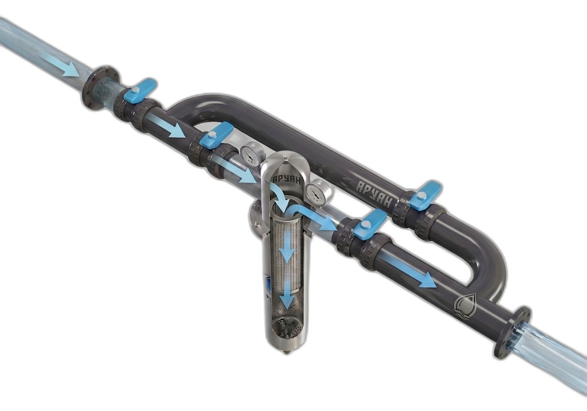
Режим 01 · Рабочий
Вода проходит через фильтр в штатном направлении. Загрязнения задерживаются сеткой фильтроэлемента и скапливаются в колбе. Чистая вода подаётся потребителю. Байпас закрыт.
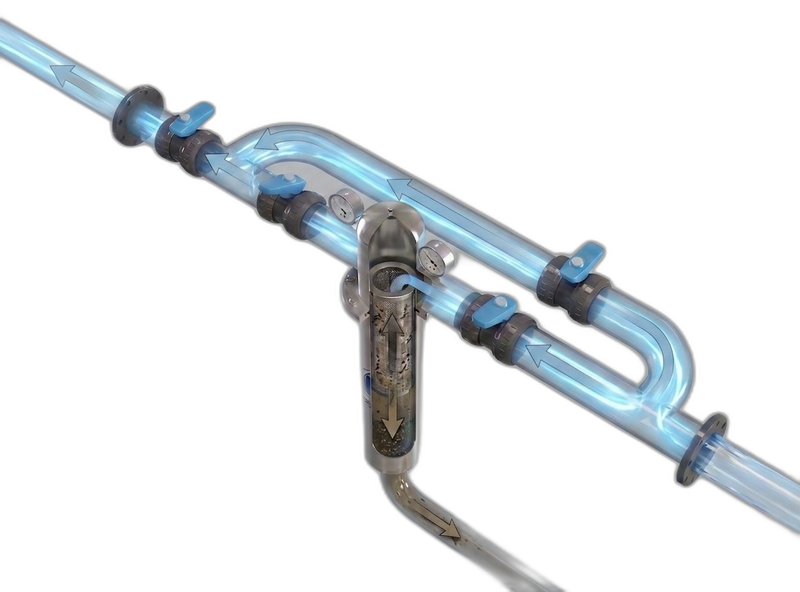
Режим 02 · Обратная промывка
Краны переключают поток в обратном направлении — он сбивает загрязнения с сетки и уносит их в дренаж. Не нужно вынимать картридж для ручной промывки.
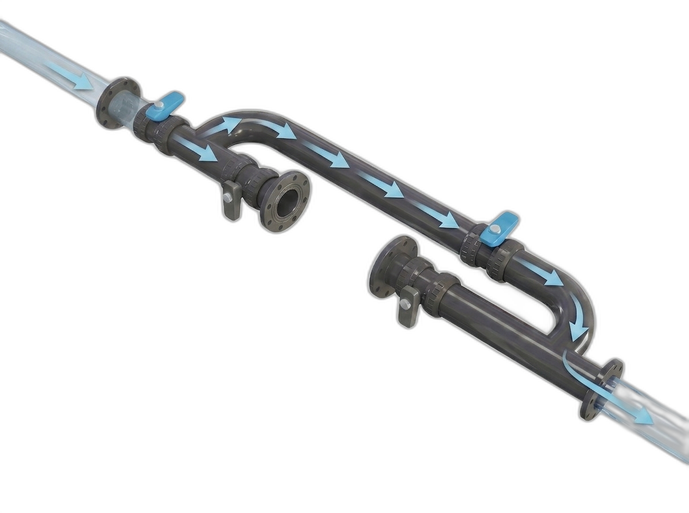
Режим 03 · Байпас (обход)
Вода идёт в обходную линию — подача потребителю не прерывается. Фильтр можно извлечь для ревизии, промывки или замены.
Фото
Наименование
Диаметр
Функция
Материал
Байпасная система ПВХ
ДУ 40
Обратная промывка
ПВХ
Байпасная система ПВХ
ДУ 50
Обратная промывка
ПВХ
Байпасная система ПВХ
ДУ 80
Обратная промывка
ПВХ
Байпасная система ПВХ
ДУ 100
Обратная промывка
ПВХ
Байпасная система ПВХ
ДУ 150
Обратная промывка
ПВХ
Байпасная система ПВХ
ДУ 200
Обратная промывка
ПВХ
Байпасная система ПВХ
ДУ 250
Обратная промывка
ПВХ
Байпасная система ПВХ
ДУ 300
Обратная промывка
ПВХ
Каталог — Механическая очистка воды
Раздел 05 · Управление системой
Автоматизированный щит управления
Щит обеспечивает централизованное управление всем оборудованием водоочистного комплекса.
Насосы, электрозадвижки, клапаны, контроллеры промывки — в одном щите
Датчики давления и уровня в одном контуре управления
Защита от сухого хода и перегрузки, аварийное отключение с индикацией
Для комплексных систем промышленного и коммунального назначения
Управление
Насосы, электрозадвижки, клапаны
Контроллеры промывки — в одном щите
Защита
Сухой ход, перегрузка
Аварийное отключение с сигнализацией
Исполнение
Металлический шкаф IP54, настенный монтаж
Разрабатывается под конкретный объект
Фото
Наименование
Характеристики
Щит управления системой водоподготовкиБазовая конфигурация
• Управление насосами, клапанами, датчиками• Защита от сухого хода и перегрузки• Индикация режимов работы на панели• Питание: 380/220 В, 50 Гц
Индивидуальное проектирование
Щиты управления разрабатываются под конкретную систему водоподготовки. Стоимость определяется после изучения состава оборудования, количества управляемых точек и требований к автоматизации. Обратитесь к менеджеру для расчёта.
Заказать или узнать подробнее
ООО «Техноинтеллект»
Аруан & Аурус — системы водоподготовки
8-800-100-39-54
Бесплатно по России
Свяжитесь с нами
Подберём систему под вашу задачу
Механическая очистка воды — фильтры Аруан и Аурус
Отдел продаж
8-800-100-39-54
Бесплатно по России
Email: 95909@mail.ru
Сайт: filtr-aruan.ru
Бухгалтерия: 8-929-680-32-13
Логистика: 8-929-576-34-49
Наведите камеру — каталог на filtr-aruan.ru
Реквизиты
ООО «ТЕХНОИНТЕЛЛЕКТ»
ИНН 5047229652 · КПП 504701001 · ОГРН 1195081058259
Р/с 40702810040000007112, ПАО Сбербанк · К/с 30101810400000000225 · БИК 044525225
Юр. адрес: 141733, Московская область, г. Лобня, ш. Букинское, д. 39, литера А-1, этаж 1, ком. 5